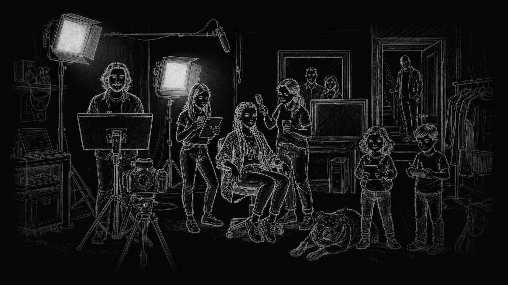

NARZU
Artefacto único del piloto: 6 viñetas, cierre epistémico y PDF

Artefacto único del piloto: 6 viñetas, cierre epistémico y PDF
Episodios del piloto
Cada nuevo episodio de 6 viñetas aparecerá aquí junto con "El dilema del color".
Inventa un episodio propio dentro del universo NARZU. La muestra “El dilema del color” sirve como referencia; aquí defines otro nudo dramático con los mismos personajes y marco narrativo.
Piensa en una tensión concreta: alguien duda, se resiste, se equivoca, pide ayuda o descubre algo sobre la IA en la escuela.
Elige quiénes sostienen el conflicto. No necesitas crear personajes nuevos para contar otra historia.
No hay personajes definidos en este artefacto. Vuelve al artefacto para añadirlos.
En el piloto del taller cada episodio trabaja con 6 viñetas.